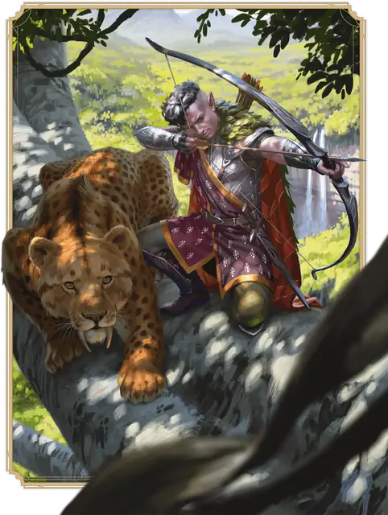

Следопыт
Ranger

Основная характеристика Ловкость и Мудрость
Кость хитов К10 за уровень Следопыта
Хиты за уровень 1к10 (или 6) + ваш модификатор Телосложения (суммарно минимум 1)
Владение спасбросками Сила и Ловкость
Владение навыками Выберите три: Атлетика, Восприятие, Выживание, Обращение с животными, Природа, Проницательность, Расследование или Скрытность
Владение оружием Простое и Воинское оружие
Тренированность с доспехами Легкие и Средние доспехи и Щиты
Начальное снаряжение Выберите А или Б:
(А) Проклёпанный кожаный доспех, Скимитар, Короткий меч, Длинный лук, 20 Стрел, Колчан, Друидическая фокусировка (веточка омелы), Набор путешественника и 7 ЗМ;
или (Б) 150 ЗМ
| Уровень | Бонус владения | Классовые умения | Избранный враг | Подготовленные заклинания | Ячейки заклинаний на уровень заклинаний: 1 | Ячейки заклинаний на уровень заклинаний: 2 | Ячейки заклинаний на уровень заклинаний: 3 | Ячейки заклинаний на уровень заклинаний: 4 | Ячейки заклинаний на уровень заклинаний: 5 |
|---|---|---|---|---|---|---|---|---|---|
| 1 | +2 | Сотворение заклинаний, Избранный враг, Оружейное мастерство | 2 | 2 | 2 | - | - | - | - |
| 2 | +2 | Искусный исследователь, Боевой стиль | 2 | 3 | 2 | - | - | - | - |
| 3 | +2 | Подкласс Следопыта | 2 | 4 | 3 | - | - | - | - |
| 4 | +2 | Увеличение характеристики | 2 | 5 | 3 | - | - | - | - |
| 5 | +3 | Дополнительная атака | 3 | 6 | 4 | 2 | - | - | - |
| 6 | +3 | Вездеходность | 3 | 6 | 4 | 2 | - | - | - |
| 7 | +3 | Умение подкласса | 3 | 7 | 4 | 3 | - | - | - |
| 8 | +3 | Увеличение характеристики | 3 | 7 | 4 | 3 | - | - | - |
| 9 | +4 | Экспертность | 4 | 9 | 4 | 3 | 2 | - | - |
| 10 | +4 | Неутомимость | 4 | 9 | 4 | 3 | 2 | - | - |
| 11 | +4 | Умение подкласса | 4 | 10 | 4 | 3 | 3 | - | - |
| 12 | +4 | Увеличение характеристики | 4 | 10 | 4 | 3 | 3 | - | - |
| 13 | +5 | Неустанный охотник | 5 | 11 | 4 | 3 | 3 | 1 | - |
| 14 | +5 | Завеса природы | 5 | 11 | 4 | 3 | 3 | 1 | - |
| 15 | +5 | Умение подкласса | 5 | 12 | 4 | 3 | 3 | 2 | - |
| 16 | +5 | Увеличение характеристики | 5 | 12 | 4 | 3 | 3 | 2 | - |
| 17 | +6 | Меткий охотник | 6 | 14 | 4 | 3 | 3 | 3 | 1 |
| 18 | +6 | Дикие чувства | 6 | 14 | 4 | 3 | 3 | 3 | 1 |
| 19 | +6 | Эпический дар | 6 | 15 | 4 | 3 | 3 | 3 | 2 |
| 20 | +6 | Истребитель врагов | 6 | 15 | 4 | 3 | 3 | 3 | 2 |
как персонаж 1-го уровня
Получите все атрибуты из таблицы «Ключевые атрибуты Следопыта».
Получите умения Следопыта 1-го уровня; они перечислены в таблице «Умения Следопыта».
как мультиклассовый персонаж
Получите следующие атрибуты из таблицы «Ключевые атрибуты Следопыта»: Кость хитов, владение Воинским оружием, владение одним навыком из списка навыков Следопыта на ваш выбор, а также тренированность с Лёгкими и Средними доспехами и Щитами.
Получите умения Следопыта 1-го уровня; они перечислены в таблице «Умения Следопыта». Ознакомьтесь с правилами мультиклассирования, чтобы определить доступные вам ячейки заклинаний.
Уровень 1: Сотворение заклинаний
Вы научились использовать магическую сущность природы для сотворения заклинаний. Правила сотворения заклинаний находятся в соответствующей статье. Следующая информация описывает, как вы используете эти правила с заклинаниями Следопыта.
Ячейки заклинаний. В таблице «Умения Следопыта» указано, сколько у вас есть ячеек заклинаний для сотворения заклинаний 1-го уровня и выше. Вы восстанавливаете все потраченные ячейки, когда завершаете Долгий отдых.
Подготовленные заклинания 1-го уровня и выше. Вы подготавливаете список заклинаний 1-го уровня и выше, которые вы можете сотворять с помощью этого умения. Для начала выберите два заклинания Следопыта 1-го уровня. Рекомендуются Лечение ран и Опутывающий удар.
Количество заклинаний в вашем списке увеличивается по мере получения уровней Следопыта, как указано в столбце «Подготовленные заклинания» таблицы «Умения Следопыта». Когда это число увеличивается, выбирайте дополнительные заклинания Следопыта до тех пор, пока их количество не сравняется с числом, указанным в таблице. Выбираемое заклинание может быть только такого уровня, для которого у вас есть ячейка заклинаний. Например, если вы Следопыт 5-го уровня, ваш список подготовленных заклинаний может включать шесть заклинаний с уровнем 1 или 2 в любом сочетании.
Если другое умение Следопыта даёт вам заклинания, которые у вас всегда подготовлены, то эти заклинания не учитываются в общем списке подготавливаемых вами с помощью этого умения заклинаний; в остальных отношениях для вас они считаются заклинаниями Следопыта.
Замена подготовленных заклинаний. Каждый раз, когда вы завершаете Долгий отдых, вы можете заменить одно заклинание из своего списка другим заклинанием Следопыта, для которого у вас есть ячейка заклинаний.
Заклинательная характеристика. Заклинательной характеристикой для ваших заклинаний Следопыта является Мудрость.
Заклинательная фокусировка. Вы можете использовать Друидическую фокусировку в качестве Заклинательной фокусировки для ваших заклинаний Следопыта.
Уровень 1: Избранный враг
У вас всегда подготовлено заклинание Метка охотника.
Вы можете дважды сотворить его, не тратя ячеек заклинаний, и вы восстанавливаете все потраченные использования этого умения, когда завершаете Долгий отдых.
Количество раз, когда вы можете сотворить это заклинание без траты ячейки заклинаний, увеличивается, когда вы достигаете определённых уровней Следопыта, как показано в столбце «Избранный враг» таблицы «Умения Следопыта».
Уровень 1: Оружейное мастерство
Ваши тренировки с оружием позволяют вам использовать свойства мастерства двух видов оружия, которыми вы владеете, по вашему выбору — например, Длинного лука и Короткого меча.
Каждый раз, когда вы завершаете Долгий отдых, вы можете изменить выбранные вами виды оружия. Например, вы могли бы переключиться на использование свойств мастерства Скимитара и Длинного меча.
Уровень 2: Искусный исследователь
Благодаря своим путешествиям вы получаете следующие преимущества.
Экспертность. Выберите один навык, которым вы владеете, но в котором у вас нет Экспертности. Вы получаете Экспертность в этом навыке.
Языки. Вы изучаете два языка по вашему выбору из таблиц языков.
Уровень 2: Боевой стиль
Вы получаете черту из категории Боевых стилей на ваш выбор. Вместо черты вы можете выбрать следующую особенность.
Воин-друид. Вы изучаете два заговора Друида на ваш выбор. Рекомендуются Наставление и Звёздный светлячок. Эти заговоры считаются для вас заклинаниями Следопыта, а вашей заклинательной характеристикой для них является Мудрость. Каждый раз, когда вы получаете уровень Следопыта, вы можете заменить один из этих заговоров другим заговором Друида.
Уровень 3: Подкласс Следопыта
Вы получаете подкласс Следопыта по вашему выбору. Подкласс — это специализация, которая даёт вам умения на определённых уровнях Следопыта. Вы всегда получаете все умения подкласса, уровень которых не больше вашего уровня Следопыта.
Уровень 4: Увеличение характеристики
Вы получаете черту Увеличение характеристик или другую черту на ваш выбор, требованиям которой вы соответствуете.
Уровень 5: Дополнительная атака
Когда в ваш ход вы совершаете действие Атака, вы можете совершить не одну, а две атаки.
Уровень 6: Вездеходность
Пока вы не носите Тяжёлых доспехов, ваша Скорость увеличивается на 10 футов. Вы также получаете Cкорость лазания и Скорость плавания, равные вашей Скорости.
Уровень 7: Умение подкласса
Вы получаете все умения подкласса Следопыта 7-го уровня.
Уровень 8: Увеличение характеристики
Вы получаете черту Увеличение характеристик или другую черту на ваш выбор, требованиям которой вы соответствуете.
Уровень 9: Экспертность
Выберите два навыка, которыми вы владеете, но в которых у вас нет Экспертности. Вы получаете Экспертность в этих навыках.
Уровень 10: Неутомимость
Первобытные силы теперь помогают вам в ваших путешествиях, предоставляя следующие преимущества:
Временные хиты. Действием Магия вы можете получить Временные хиты в количестве, равном 1к8 плюс ваш модификатор Мудрости (минимум 1 Временный хит). Вы можете использовать это действие число раз, равное вашему модификатору Мудрости (минимум один раз), и вы восстанавливаете потраченные использования по завершению Долгого отдыха.
Сопротивление истощению. Каждый раз, когда вы завершаете Короткий Отдых, ваш уровень Истощения, если таковой имеется, снижается на 1.
Уровень 11: Умение подкласса
Вы получаете все умения подкласса Следопыта 11-го уровня.
Уровень 12: Увеличение характеристики
Вы получаете черту Увеличение характеристик или другую черту на ваш выбор, требованиям которой вы соответствуете.
Уровень 13: Неустанный охотник
Ваша Концентрация на Метке охотника не может быть нарушена получением урона.
Уровень 14: Завеса природы
Вы призываете духов природы, магическим образом скрывающих вас. Бонусным действием вы можете получить состояние Невидимый до конца вашего следующего хода.
Вы можете использовать это умение число раз, равное вашему модификатору Мудрости (минимум один раз), и вы восстанавливаете потраченные использования по завершению Долгого отдыха.
Уровень 15: Умение подкласса
Вы получаете все умения подкласса Следопыта 15-го уровня.
Уровень 16: Увеличение характеристики
Вы получаете черту Увеличение характеристик или другую черту на ваш выбор, требованиям которой вы соответствуете.
Уровень 17: Меткий охотник
Вы совершаете с Преимуществом атаки по существу, отмеченному вашей Меткой охотника.
Уровень 18: Дикие чувства
Ваша связь с силами природы дарует вам Слепое зрение дальностью 30 футов.
Уровень 19: Эпический дар
Вы получаете черту из категории Эпических даров или другую черту по вашему выбору, требованиям которой вы соответствуете. Рекомендуется Дар межпространственного перемещения.
Уровень 20: Истребитель врагов
Кость урона вашей Метки охотника становится равна к10, а не к6.
Подклассы
Охотник
Защитите природу и людей от разрушения
Вы преследуете свои цели как в дикой природе, так и в других местах, используя свои способности Охотника, чтобы защитить природу и народы от сил, которые могут их уничтожить.
Уровень 3: Знания охотника
Вы можете воззвать к силам природы, чтобы выявить определенные сильные и слабые стороны вашей добычи. Пока существо помечено вашей Меткой охотника, вы знаете, есть ли у этого существа Иммунитеты, Сопротивления или Уязвимости, и если есть, то какие именно.
Уровень 3: Добыча охотника
Вы получаете одно из следующих умений на ваш выбор. Каждый раз, когда вы завершаете Короткий или Долгий отдых, вы можете заменить выбранный вариант на другой.
Убийца колоссов. Ваше упорство может измотать даже самых стойких врагов. Когда вы попадаете по существу атакой оружием, это оружие наносит цели 1к8 дополнительного урона, если Хиты цели уже ниже максимума. Вы можете нанести этот дополнительный урон только один раз за ход.
Сокрушитель орд. Один раз в каждый свой ход, когда вы совершаете атаку оружием, вы можете совершить ещё одну атаку тем же оружием против другого существа, которое находится в пределах 5 футов от первоначальной цели и в пределах досягаемости этого оружия, и которое вы ещё не атаковали в этот ход.
Уровень 7: Оборонительная тактика
Вы получаете одно из следующих умений на ваш выбор. Каждый раз, когда вы завершаете Короткий или Долгий отдых, вы можете заменить выбранный вариант на другой.
Побег от орды. Провоцированные атаки по вам совершаются с Помехой.
Защита от мультиатак. Когда существо попадает по вам броском атаки, это существо совершает с Помехой все последующие атаки по вам в этот ход.
Уровень 11: Добыча превосходного охотника
Один раз за ход, когда вы наносите урон существу, отмеченному вашей Меткой охотника, вы также можете нанести дополнительный урон от этого заклинания другому существу, которое вы видите в пределах 30 футов от первого существа.
Уровень 15: Защита превосходного охотника
Когда вы получаете урон, вы можете Реакцией дать себе Сопротивление получаемому урону и всему урону этого типа до конца текущего хода.
Повелитель зверей
Установите связь с первобытным зверем
Повелитель зверей устанавливает мистическую связь с особым животным, опираясь на первобытную магию и глубокую связь с миром природы.
Уровень 3: Первичный спутник
Вы магическим образом вызываете первичного зверя, который черпает силу из вашей связи с природой. Выберите его статистику: Земной зверь, Морской зверь или Небесный зверь. Вы также определяете, к какому виду животных относится зверь, выбирая соответствующий блоку статистики вид. Какого бы зверя вы ни выбрали, он несёт на себе отметины, указывающие на его сверхъестественное происхождение.
Зверь Дружелюбен к вам и вашим спутникам и подчиняется вашим командам. Если вы умираете, зверь исчезает.
Зверь в бою. В бою зверь действует во время вашего хода. Он может перемещаться и использовать свою Реакцию самостоятельно, но единственное действие, которое он совершает в свой ход — это действие Уклонение, если вы Бонусным действием не прикажете ему совершить другое действие, из его блока статистики или иное. Вы также можете пожертвовать одной из ваших атак при совершении действия Атака, чтобы приказать зверю совершить действие Удар зверя. Если вы получили состояние Недееспособный, зверь действует сам по себе и может использовать любое действие по своему усмотрению, а не только Уклонение.
Восстановление или замена зверя. Если с момента смерти зверя прошло не больше часа, вы можете действием Магия прикоснуться к нему и потратить ячейку заклинаний. Через 1 минуту зверь возвращается к жизни, восстанавливая все свои Хиты.
Каждый раз, когда вы завершаете Долгий отдых, вы можете вызвать другого первичного зверя, который появляется в незанятом пространстве в пределах 5 футов от вас. Вы выбираете его внешний вид и блок статистики. Если вы уже призвали зверя этим умением, то он исчезает, когда появляется новый.
Уровень 7: Исключительная дрессировка
Когда вы Бонусным действием приказываете вашему Первичному спутнику совершить действие, вы также можете приказать ему совершить его Бонусным действием действие Рывок, Отход, Уклонение или Помощь.
Кроме того, каждый раз, когда он попадает атакой и наносит урон, он может наносить на ваш выбор урон обычного для этой атаки типа или Силовой урон.
Уровень 11: Звериная ярость
Когда вы приказываете вашему Первичному спутнику совершить действие Удар зверя, он может использовать его дважды.
Кроме того, при первом в ход попадании по существу, отмеченному вашей Меткой охотника, зверь наносит дополнительный Силовой урон, равный дополнительному урону этого заклинания.
Уровень 15: Общие заклинания
Когда вы сотворяете заклинание, нацеленное на себя, вы также можете распространить его эффект на вашего Первичного спутника, если он находится в пределах 30 футов от вас.
Странник фей
Вооружитесь весельем и яростью Фей
Мистика фей окружает вас благодаря благословению архифеи или преобразившему вас месту в Стране Фей. Как бы вы ни получили фейскую магию, теперь вы Странник фей. Ваш задорный смех озаряет сердца угнетённых, а ваша воинская доблесть вселяет ужас в ваших врагов, ибо велика радость фей и ужасна их ярость.
Уровень 3: Ужасающие удары
Вы можете усилить удары своего оружия с помощью разрушающей разум магии, почерпнутой из мрачных глубин Страны Фей. Когда вы попадаете по существу оружием, вы можете нанести цели 1к4 дополнительного Психического урона; каждая цель может получить этот дополнительный урон только один раз за ход.
Этот дополнительный урон увеличивается до 1к6, когда вы достигаете 11-го уровня Следопыта.
Уровень 3: Заклинания странника фей
С момента достижения вами уровня Следопыта, указанного в следующей таблице, у вас всегда будут подготовлены соответствующие этому уровню заклинания.
| Уровень Следопыта | Заклинания |
| 3 | Очарование личности |
| 5 | Туманный шаг |
| 9 | Вызов феи |
| 13 | Переносящая дверь |
| 17 | Фальшивый двойник |
Вы также обладаете благословением фей. Выберите его из таблицы Дары Страны Фей или определите случайным образом.
| 1к6 | Дар |
| 1 | Иллюзорные бабочки порхают вокруг вас, пока вы совершаете Короткий или Долгий отдых. |
| 2 | На рассвете в ваших волосах распускаются цветы. |
| 3 | Вы едва заметно пахнете корицей, лавандой, мускатным орехом или другой приятной травой или специей. |
| 4 | Ваша тень танцует, пока никто не смотрит прямо на нее. |
| 5 | На вашей голове растут рога, аккуратные или ветвистые. |
| 6 | Ваши кожа и волосы меняют цвет с каждым рассветом. |
Уровень 3: Потустороннее очарование
Каждый раз, когда вы делаете проверку Харизмы, вы получаете бонус к проверке, равный вашему модификатору Мудрости (минимум +1).
Вы также получаете владение одним из навыков по вашему выбору: Выступление, Обман или Убеждение.
Уровень 7: Заманивающий трюк
Магия Страны Фей оберегает ваш разум. Вы совершаете с Преимуществом спасброски, совершаемые чтобы избежать или окончить на себе состояние Очарованный.
Кроме того, каждый раз, когда вы или видимое вами в пределах 120 футов от вас существо преуспеваете в спасброске, совершаемом чтобы избежать или окончить состояния Очарованный или Испуганный, вы можете Реакцией заставить другое видимое вами в пределах 120 футов от вас существо совершить спасбросок Мудрости против вашей Сл спасбросков заклинаний. При провале цель получает состояние Очарованный или Испуганный (на ваш выбор) на 1 минуту. Она может повторять этот спасбросок в конце каждого своего хода, при успехе оканчивая на себе этот эффект.
Уровень 11: Подкрепление фей
Вы можете сотворять заклинание Вызов феи без Материального компонента. Вы также можете единожды сотворить его с помощью этого умения без траты ячейки заклинаний; вы восстанавливаете возможность сделать это при завершении Долгого отдыха.
Каждый раз, когда вы начинаете сотворять это заклинание, вы можете изменить его так, чтобы оно не требовало Концентрации. В таком случае длительность этого заклинания составит 1 минуту.
Уровень 15: Туманный странник
Вы можете сотворять Туманный шаг без траты ячеек заклинаний. Вы можете использовать эту способность число раз, равное вашему модификатору Мудрости (минимум один раз), восстанавливая использованное, когда вы завершаете Долгий отдых.
Кроме того, каждый раз, когда вы сотворяете Туманный шаг, вы можете взять с собой одно согласное существо, видимое вами в пределах 5 футов от себя. Это существо телепортируется в незанятое пространство по вашему выбору в пределах 5 футов от места назначения.
Сумрачный охотник
Используйте магию Теней, чтобы сражаться с врагами
Сумрачные охотники чувствуют себя как дома в самых тёмных местах; они вооружаются магией, почерпнутой из Царства Теней, чтобы сражаться с врагами, скрывающимися во тьме.
Уровень 3: Угроза из засады
Вы овладели искусством устраивать устрашающие засады, что дает вам следующие преимущества:
Прыжок из засады. В начале вашего первого хода в каждом бою ваша Скорость увеличивается на 10 футов до конца этого хода.
Ужасающий удар. Когда вы атакуете существо и попадаете по нему оружием, вы можете нанести ему 2к6 дополнительного Психического урона. Вы можете использовать это умение только один раз в ход. Вы можете использовать это умение количество раз, равное вашему модификатору Мудрости (минимум один раз), восстанавливая потраченные использования по завершении Долгого отдыха.
Бонус к инициативе. Когда вы совершаете бросок Инициативы, вы можете добавить к результату ваш модификатор Мудрости.
Уровень 3: Заклинания сумрачного охотника
С момента достижения вами уровня Следопыта, указанного в следующей таблице, у вас всегда будут подготовлены соответствующие этому уровню заклинания.
| Уровень Следопыта | Заклинания |
| 3 | Маскировка |
| 5 | Трюк с веревкой |
| 9 | Ужас |
| 13 | Высшая невидимость |
| 17 | Притворство |
Уровень 3: Теневой взор
Вы обретаете Тёмное зрение дальностью 60 футов. Если у вас уже есть Тёмное зрение, когда вы получаете это умение, то его дальность увеличивается на 60 футов. Вы также искусны в уклонении от существ, которые полагаются на Тёмное зрение. Если вы полностью находитесь в области Темноты, то для любого существа, которое может видеть вас в этой Темноте только с помощью Тёмного зрения, вы считаетесь имеющим состояние Невидимый.
Уровень 7: Железный разум
Вы отточили свою способность сопротивляться влияющим на разум силам. Вы получаете владение спасбросками Мудрости. Если у вас уже есть это владение, то вместо него вы получаете владение спасбросками Интеллекта или Харизмы (на ваш выбор).
Уровень 11: Охотничья ярость
Психический урон Ужасающего удара вашего умения Угроза из засады становится равен 2к8. Кроме того, когда вы используете Ужасающий удар, вы можете вызвать один из следующих дополнительных эффектов:
Внезапный удар. Вы можете совершить ещё одну атаку тем же оружием против другого существа, находящегося в пределах 5 футов от первоначальной цели и находящегося в пределах досягаемости этого оружия.
Террор. Цель и все существа, находящиеся в пределах 10 футов от неё, должны совершить спасбросок Мудрости против вашей Сл спасброска заклинаний. При провале существо получает состояние Испуганный до начала вашего следующего хода.
Уровень 15: Теневое уклонение
Когда существо совершает бросок атаки по вам, вы можете Реакцией наложить на этот бросок Помеху. После того, как атака попадёт или промахнётся, вы можете телепортироваться в видимое вами незанятое пространство в пределах 30 футов от вас.
Зимний ходок
Выживайте среди ужасов ледяных пустошей
Зимние ходоки оттачивают своё мастерство в суровых морозных местах, таких как Долина ледяного ветра. Эти безжалостные, обветренные Следопыты охотятся на монстров, наводящих ужас на арктические пустоши; в конечном итоге они становятся ужасами льдов сами. Зимние ходоки хорошо знакомы c Долиной ледяного ветра, обитающими в ней монстрами вроде йети и скальных кошек, знают о спящей магии павших Нетерильских городов и о растущей угрозе пришельцев из Подземья. За эти знания, ужасающую магию и ледяной прагматизм Зимних ходоков как уважают, так и боятся. В Десяти городах говорят, что свои грозные силы эти Следопыты получают, открываясь злобным сущностям. Напротив, многие из Регхедских кочевников считают, что духи природы накладывают на Зимних ходоков своё проклятие.
Уровень 3: Ледяной исследователь
Вы получаете следующие преимущества:
Кусачий холод. Урон ваших атак оружием, а также ваших заклинаний Следопыта и умений Следопыта, игнорирует Сопротивление урону Холодом.
Сопротивление морозу. Вы обладаете Сопротивлением урону Холодом.
Полярные удары. Когда вы попадаете по существу броском атаки оружием, вы можете нанести этому существу 1к4 дополнительного урона Холодом. Каждое существо может получать этот дополнительный урон только раз в ход. Когда вы достигаете 11-го уровня Следопыта, этот дополнительный урон вырастает до 1к6.
Уровень 3: Изморозь охотника
Ледяная корка покрывает вас и вашу добычу, защищая вас и замедляя её. Когда вы сотворяете Метку охотника, вы получаете Временные хиты в количестве, равном 1к10 + ваш уровень Следопыта.
Кроме того, пока на существо действует ваша Метка охотника, оно не может совершать действие Отход.
Уровень 3: Заклинания зимнего ходока
С момента достижения вами уровня Следопыта, указанного в следующей таблице, у вас всегда будут подготовлены соответствующие этому уровню заклинания.
| Уровень Следопыта | Заклинания |
| 3 | Ледяной кинжал |
| 5 | Удержание личности |
| 9 | Снятие проклятия |
| 13 | Град |
| 17 | Конус холода |
Уровень 7: Укрепляющий дух
В самых мучительных ситуациях вы научились не только как выжить, но и как поддержать союзников. Действием Магия вы можете выбрать видимых вами существ в количестве не большем, чем ваш модификатор Мудрости (минимум одно). Каждое выбранное существо восстанавливает Хиты в количестве, равном 1к10 + ваш уровень Следопыта, а также в течение следующего часа совершает с Преимуществом спасброски на избежание и окончание состояния Испуганный.
Как только вы используете это умение, не можете сделать это снова, пока не завершите Долгий отдых.
Уровень 11: Выстужающее возмездие
Когда существо попадает по вам броском атаки, вы можете Реакцией заставить атакующее существо совершить спасбросок Мудрости (Сл равна вашей Сл спасброска заклинаний). При провале оно получает состояние Ошеломлённый до конца вашего следующего хода. Пока оно Ошеломлено, его Скорость падает до 0.
Вы можете использовать это умение количество раз, равное вашему модификатору Мудрости (минимум 1 раз), и вы восстанавливаете все потраченные использования, когда завершаете Долгий отдых.
Уровень 15: Морозный призрак
Когда вы сотворяете Метку охотника, можете принять призрачную, как падающий снег, форму. Эта форма действует, пока действует Метка охотника; пока вы в этой форме, вы обладаете нижеперечисленными преимуществами. Как только вы используете это умение, не можете сделать это снова, пока не завершите Долгий отдых. Вы можете восстановить использование этого умения, потратив ячейку заклинаний 4-го уровня или выше (действий не требуется).
Душа мороза. Вы обладаете Иммунитетом к урону Холодом. Когда вы входите в эту форму, а также в начале каждого из ваших последующих ходов, выберите существ в области исходящей от вас 15-футовой Эманации: каждое выбранное существо получает 2к4 урона Холодом.
Частичная бестелесность. Вы обладаете Иммунитетом к состояниям Опрокинутый, Опутанный и Схваченный. Вы можете перемещаться через объекты и существ, как по Труднопроходимой местности, но вы получаете 1к10 Силового урона, если заканчиваете ваш ход внутри объекта или существа. Если форма заканчивается, пока вы внутри объекта или существа, вас выталкивает в ближайшее незанятое пространство.
Страж пустошей
Используйте ужасные силы древности
Легенды говорят, что наиболее кровожадные ужасы древности скрываются в старых, давно покинутых уголках земли. Стражи пустошей почитают таких существ и черпают в них силы, превращаясь в безжалостных, чудовищных защитников, бродящих по неприветливым побережьям, горным кручам и другим тёмным, диким местам.
Уровень 3: Ярость дикой природы
От черпаемых вами сил странных, древних ужасов, терзающих ваши земли, ваше тело неестественно изменяется: например, вы можете отращивать ветвистые рога, гнилостные клыки, или, может быть, ваша тень крутится вокруг вас или растягивается. Бонусным действием вы можете потратить одно использование Избранного врага, чтобы принять призрачную форму, дарующую вам следующие преимущества на 1 минуту или до тех пор, пока вы не получите состояние Недееспособный, умрёте или не окончите превращение досрочно (действий не требуется).
Древняя броня. Ваше тело покрывается гниющей корой и звериной щетиной. Вы получаете бонус +1 к КЗ; этот бонус увеличивается до +2, как только вы достигаете 11-го уровня Следопыта.
Рыскающее возмездие. Немедленно после того, как видимое вами в пределах 5 футов от вас существо нанесёт урон вам или вашему союзнику, вы можете совершить по этому существу Провоцированную атаку.
Пугающая аура. Когда вы принимаете Ярость дикой природы, а также в начале каждого вашего следующего хода, каждое существо по вашему выбору из находящихся в исходящей от вас Эманации радиусом 10 футов должно совершить спасбросок Мудрости против вашей Сл спасброска заклинаний. При провале существо получает состояние Испуганный до начала вашего следующего хода.
Уровень 3: Заклинания стража пустошей
С момента достижения вами уровня Следопыта, указанного в следующей таблице, у вас всегда будут подготовлены соответствующие этому уровню заклинания.
| Уровень Следопыта | Заклинания |
| 3 | Гневная кара |
| 5 | Смена обличья |
| 9 | Призрачный скакун |
| 13 | Подчинение зверя |
| 17 | Удар стального ветра |
Уровень 7: Алчущая мощь
Вы получаете бонус к спасброскам Телосложения, равный вашему модификатору Мудрости (минимум +1).
Кроме того, один раз в ход, когда вы попадаете по существу броском атаки, преображены Яростью дикой природы и при этом Окровавлены, вы восстанавливаете Хиты в количестве, равном 1к10 + ваш модификатор Мудрости.
Уровень 11: Гниль и жестокость
Ваше почитание диких, мистических сущностей продолжает изменять вас. Когда вы преображены Яростью дикой природы, вы получаете также следующие преимущества:
Ужасающая аура. Когда существо проваливает спасбросок против вашей Пугающей ауры, это существо также не может восстанавливать Хиты или совершать Реакции до начала вашего следующего хода.
Цепляющиеся корни. Когда вы попадаете по существу броском атаки с оружием, вы можете использовать свойство мастерства Замедляющее или Ослабляющее вместе с другим свойством мастерства, используемым вами с этим оружием.
Уровень 15: Древняя мощь
Вы полностью поддаётесь древней и ужасной мощи диких пустошей, что даёт вам следующие преимущества.
Зловещие удары. Когда вы попадаете броском атаки по существу, у которого есть состояние Испуганный, эта атака наносит дополнительный урон, равный вашему модификатору Мудрости.
Неугасающая ярость. Если вы преображены Яростью дикой природы, и ваши Хиты опускаются до 0, но вы не убиты мгновенно, вы можете вызвать прилив сил дикой природы. Ваши Хиты не опускаются до 0, а становятся равны вашему уровню Следопыта, умноженному на два. Как только вы используете это преимущество, вы не можете сделать это снова, пока не завершите Долгий отдых. Вы можете также потратить ячейку заклинаний 4-го уровня или выше (действий не требуется), чтобы восстановить использование этого преимущества.
Вневременной. Вы обладаете Иммунитетом к состоянию Истощения.
Описание
Вдали от городской суеты, среди непроходимых лесов и на широких равнинах Следопыты несут свой бесконечный дозор. Следопыты учатся выслеживать свою добычу, как это делает хищник, бесшумно передвигаясь по дикой местности и скрываясь в кустах и за камнями.
Благодаря своей связи с природой Следопыты также могут творить заклинания, использующие первобытные силы дикой природы. Таланты и магия Следопыта полностью сосредоточены на защите мира от разрушительных действий чудовищ и тиранов.